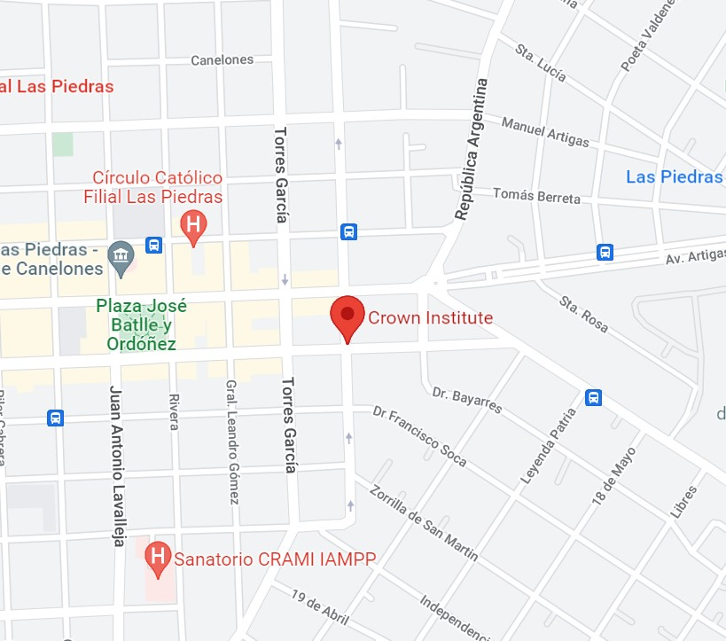

¿Por qué Crown Institute?
Nuestra misión es llegar con el idioma y su cultura a todas las generaciones que componen nuestro alumnado. Satisfacemos las necesidades de las personas con las que trabajamos a través de productos y servicios tanto inclusivos como accesibles y, además, investigamos cómo nuestros alumnos usan y aprenden el idioma para que nuestro enfoque de aprendizaje y evaluación sea efectivo, eficiente, y agradable. Ya sea que te estés preparando para tomar un examen o simplemente para mejorar tu inglés, podemos ayudarte.
Alumnos
Hacemos que nuestros alumnos se sientan cómodos y sostenidos abarcando todas sus necesidades. Recibimos a todo aquel que esté interesado en aprender.
Docentes
Docentes capacitados y en constante actualización, participando de los ditintos eventos, cursos, charlas, y seminarios en todo el mundo.
Instituto
Contamos con variedad de salones para ajustar la cursada a los horarios y días disponibles de nuestros alumnos, permitiendonos flexibilidad en ello. También un baño y cocina para lo que sea necesario. Nuestra cobertura médica a cargo de Emmi (ARREGLAR)
Ubicación
José Pedro Varela 629